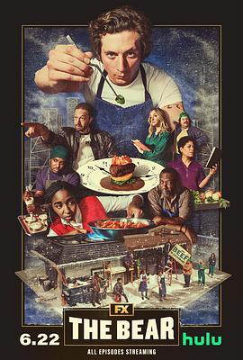

熊家餐馆 第二季 / The Bear Season 2
又名：大熊餐厅(台)
单人剧集很好看
作品信息
| 导演 | 克里斯托弗·斯托勒 / 乔安娜·卡洛 / 拉米·尤素夫 |
| 编剧 | 克里斯托弗·斯托勒 / 乔安娜·卡洛 / 凯伦·约瑟夫·爱德考克 / 凯瑟琳·谢蒂娜 / 斯泰西·奥西-库福尔 / 索菲亚·列维茨基-韦兹 / 亚历克斯·罗素 / 雷内·古布 / 凯莉·高卢什卡 |
| 主演 | 杰瑞米·艾伦·怀特 / 艾邦·摩斯-巴克拉赫 / 阿尤·艾德维利 / 莱昂内尔·博伊斯 / 艾比·艾略特 / 马蒂·马得胜 / 莉莎·科伦-扎亚斯 / 奥利弗·普莱特 / 埃德温·李·吉布森 / 莫莉·戈登 / 罗伯特·汤森德 / 科里·亨德里克斯 / 杰米·李·柯蒂斯 / 克里斯·维塔斯凯 / 亚历克斯·莫法特 / 何塞·M·塞万提斯 / 理查德·埃斯特拉斯 / 阿尔玛·华盛顿 / 威尔·保尔特 / 乔·博恩瑟 / 吉莉安·雅各布斯 / 约翰·木兰尼 / 鲍勃·奥登科克 / 莎拉·保罗森 / 奥利维娅·科尔曼 / 瑞奇·斯塔菲里 / 亚当·沙皮罗 / 莎拉·拉莫斯 / 卡门·克里斯托弗 / 毛拉·基德韦尔 / 雷内·古布 / 宝琳娜·帕尔 / 珉宇·孔 / 迈克尔·萨尔津斯基 / 兰斯·贝克 / 伊莎·阿西尼加斯 / 杰克·兰卡斯特 / 丽兹·沙普 / 蒙特·奥奎恩 |
| 类型 | 剧情 / 喜剧 |
| 制片国家/地区 | 美国 |
| 语言 | 英语 |
| 首播 | 2023-06-22(美国) |
| 季数 | 2 |
| 集数 | 10 |
| 单集片长 | 30-66分钟 |
| IMDb | tt21281442 |
最后一次看到是 2026-08-12T21:11:10+08:00 · 豆瓣原页